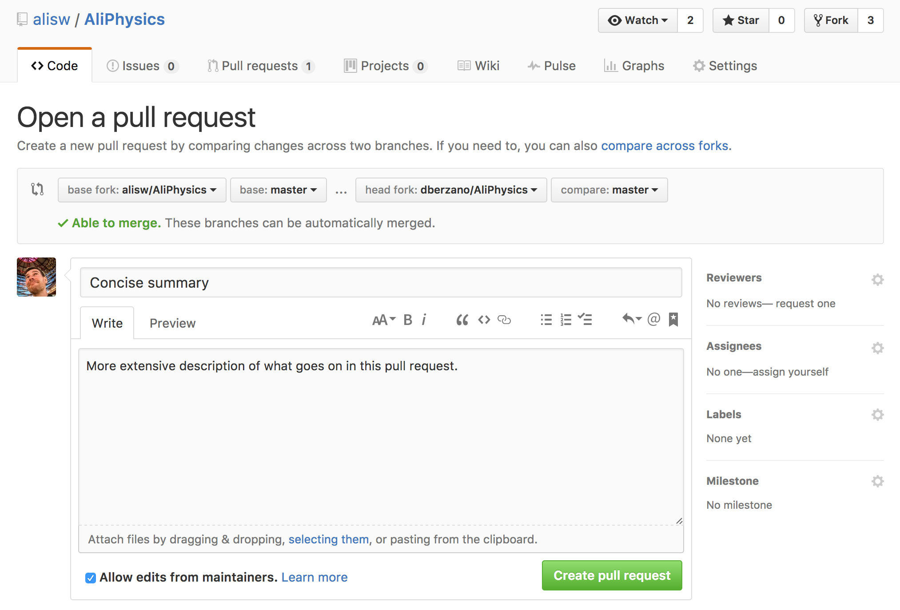

Basic tutorial
What are these instructions for?#
These instructions are meant to be the simplest way to get you up and running developing one feature at the time for AliPhysics on GitHub. They can be reused for AliRoot by simply changing AliPhysics to AliRoot. If you are trying to do something more complicated or you want to have more detailed information on the inner workings of the system, please refer to the advanced workflow instead.
Setup GitHub account#
The first thing you need to do is to create an account there and to map your CERN account to a GitHub one. This is a one time operation. You can do the mapping by going to:
In case you don’t have a GitHub account you will be asked to create one. Notice there is no need for a paying account: a free GitHub account is sufficient to work on ALICE software.
Note: we recommend you create a GitHub username which is the same as your CERN one, if available.
In case you have an account, login and authorize “ALICE Continuous Integration” to read your user name so that it can be mapped to your CERN account.
Fork a repository#
“Forking” a repository in GitHub means that you create a remote copy of some official (i.e. upstream) repository in your own account. This copy is linked to the original repository and allows you to propose changes in the form of a so-called “Pull Request”.
To fork AliPhysics you can point your browser to:
and follow the instructions.
Setup user configuration on your local computer#
Initial setup:
git config --global user.name "<Firstname> <Lastname>"
git config --global user.email <your-email-address>
git config --global user.github <your-github-username>
Note that the --global flag sets those parameters for every Git repository on
your laptop. Depending on the number of Git projects you contribute to you might
want to set such options per repository.
The
user.namewill appear in every commit you make. Note that the old configuration suggested you used your CERN account name, whereas we now suggest you configure it with your “Firstname Lastname”.
It is probably convenient to setup a passwordless login for GitHub using SSH, otherwise you need to type your password on each operation. If you already have a SSH key have a look at these instructions. More details on GitHub and SSH are also available.
Credentials for private repositories#
A full AliRoot/AliPhysics build requires manually inputting your CERN username and password in some cases, as it is stored on private ALICE Git repositories hosted at CERN GitLab.
In order to access them, you need to login to gitlab.cern.ch at least once using your browser in order to be registered, otherwise you will not be able to download private components! After you have done that for the first time you need to wait for up to one hour before you can download the code. This is explained on this CERN IT-maintained documentation.
During the compilation process you might be asked several times for your CERN credentials. To avoid repeating the procedure several times, and to prevent unattended builds to wait for your input, you can setup a temporary or permanent credentials cache. Note that the credentials cache is also an alternative to setting up a GitHub SSH key.
Setup software repositories on your local computer#
We recommend to follow the ALICE Analysis Tutorial. Alternatively, see further below if you want to check out the repository manually.
With older versions of aliBuild, the central remote repository (used for pulling updates) would be called
origininstead of the usual nameupstreamand the personal (fork) remote repository (used for pushing changes) would be called<your-github-username>instead of the usual nameorigin. Please check your settings usinggit remote -vand adjust the Git commands mentioned in the following instructions accordingly, if needed.
We will assume from now on that your working directory is ~/alice. If you
have your old installation under ~/alice then we suggest you use a different
directory to avoid confusion.
I have participated to the GitHub test#
If you have participated to the GitHub test and you want to sync with the current official AliRoot/AliPhysics and alidist repositories from upstream, you can now follow this procedure which might save you some build time.
Assuming you have your GitHub test installation under ~/alice, destroy your
current recipes, AliRoot and AliPhysics directories:
Then clone AliRoot and AliPhysics from GitHub:
cd ~/alice
git clone --origin upstream https://github.com/alisw/AliRoot
git clone --origin upstream https://github.com/alisw/AliPhysics
If you use aliBuild you can skip the two clones and do directly:
You may now setup your repositories and update your fork with changes from the master, and you will be ready to build, and create pull requests.
Contribute to ALICE software#
Now if you want to contribute to AliPhysics move to the clone directory and tell Git about the existence of your own fork, created in a previous step.
If you use SSH (recommended, especially if you are using a slow or unreliable connection):
If you do not use SSH:
Updating your fork with changes from the master#
While you are working, other people may propose code for inclusion in the master. You can update your local repository and your fork with the latest version of the master with the following lines:
Note that if you are in the middle of your work (i.e. you have your changes already pushed to your forked repository which are not yet merged), you might need to perform a “force push”, as the
--rebaseoption may change your local Git history:You should use the
-fswitch only when needed and if you are sure you are not going to destroy any of your changes first.
Note that you don’t need to pull from upstream every time you need to push your changes. This is a big improvement over the old workflow where you had to pull before you could push, which could happen frequently when the daily tag time approached.
Workflow to commit your changes#
As depicted in the image, the general idea is:
- you always fetch the changes (“pull”) from the upstream repository
- you always write your changes (“push”) to your own fork
- you propose the changes to be added upstream by opening a “pull request”
- your code change proposal is checked by a series of automatic tests before being accepted (more details follow)
What we illustrate here is a simplified workflow, where you work on a single branch. The workflow is simpler, but it has limitations you need to know.
- If you work on one feature at a time this is enough. When you open the
pull request, though, you will have to wait until it is accepted and merged
before starting developing new features. This is because each pull request is
tied to your remote
master, and if you push to it you are updating the existing pull request. For the same reason, if you follow this workflow you cannot open multiple pull requests at the same time because you need multiple branches for that. - If you need to work on multiple features at the same time then you will need to work with multiple branches (advanced documentation).
It is important to stress that if you have an open (not yet merged) pull request following this simplified workflow and you push new changes, then the open pull request gets updated and tests will start over!
Create a pull request#
Let’s say you have a development to AliPhysics you want to propose for inclusion. This is done with a “pull request”. In order to create one you need to do the following. First off, commit the changed files and push them to your fork:
At this point changes are on your own fork on GitHub, and they are not yet upstream. This means they will not be included in the daily tag, for the moment. It is important to understand this point as this is the main difference to the old workflow. To get your changes included, you need to create a pull request by going to:
https://github.com/\<your-github-username>/AliPhysics
then click on “New pull request”:
Review the proposed changes and if you are satisfied click on the green button saying “Create a pull request”:
Please make sure the title and the description of your pull request are spell-checked and express the purpose of the changes in a simple and concise way. A good description will help yourself, the other contributors to ALICE software, and it will guarantee a faster approval (if required).
Notice GitHub is a popular, public, hosting site, so there will be zero tolerance for offending statements or embarrassments to ALICE collaboration. In case of doubt, you can find more information in the commit guidelines.

Once you are done, your code is proposed for inclusion in the official repository, but it’s not yet in, as it needs to pass a review process. Notice also that creating pull requests can be done from the command-line, see the advanced guide for more information.
Review process#
Pull requests are checked for permissions first, and permissions are directory-based (or in some cases even file-based). We have retained the old permissions, so if you were not previously supposed to modify files under a certain directory, this process now requires an approval.
There might be two possible scenarios:
- The user is allowed to modify all files affected by the pull request.
- The user is not allowed to modify all files and there is a list of “approvers” who must approve it first.
In the first case, the user is allowed to modify the files and the build system will tell you that by commenting. For example:
In the other case, if the user is not allowed to modify the code touched by the pull requests, the person(s) responsible will be contacted automatically and will be asked to comment on the pull request and whether or not the change is approved. In this example, Jan Fiete and Jochen need to approve the request:
Note that the system will add the real name next to the GitHub username. GitHub
users are mentioned by prepending @ to the username in a comment: by default,
mentioned users will receive an email notification. This is how approvers get
notified of pending commits.
People with approval rights have now to comment by posting one of the following special comments:
+1: approve the change. If tests are successful the pull request will be automatically merged.+testapprove testing only. Tests will be started but pull request won’t be automatically merged even if tests are all green. Green tests will require a further approval.
Note that the
+1or+testmust be the first word of your comment, otherwise the comment will be ignored. The automatic review system will provide feedback after your reply. Obviously,+1s from unauthorized users are simply ignored.
Once all approvals have been granted, testing begins. The automatic system will give you a feedback similar to the following:
No pull request is automatically rejected. In case a pull request wants to change the project structure it will be handled by the project administrators.
Testing process#
Every single pull request is tested for a successful build on our production environment: this means that a pull request in AliPhysics should work with the reference AliRoot version using the same environment used on the Grid.
The automatic build system provides you feedback through the GitHub testing interface. In case you see a yellow badge, it means that the system has taken over your request and it is now trying to build it:
If your code produces an error, this is reported together with the problem. For instance:
Part of the build log is reported in the comment. The full log is also available by clicking on the “Full log” link.
In this case, you need to fix the problem and push the fix to your fork (the same way as before). The new commits are then automatically added to the pull request, and testing is restarted. If you don’t want to add a commit but you simply want to change your previous one have a look at the amend howto below.
If your code works fine, this will be reported:
Your code will be merged into the master and the pull request closed:
This may be a good moment to update your repository with the latest changes in the master.
Pull request size limit#
We have put in place a size check on each opened pull request set to 20 MB. The limit is in place in order to avoid an uncontrolled growth of the Git repositories and make them slimmer and easier to download.
In case you go beyond the limit, your pull request will be automatically rejected:
You will also receive an email notification. The general idea is to use the code repositories to store code only: since sometimes there is the need to store data files too we are providing an alternative with the following features:
- Large files are easy to upload and with proper PWG-based permissions
- Large files are versioned daily on CVMFS for easy access from Grid jobs
- We have an interface in AliRoot to access those files transparently
If you are using or plan to use large files, even if you are below our current limit, we encourage you to follow the documented procedure.
Conflicts between different pull requests#
Sometimes it might happen that your pull request touches files modified also by other users, thus creating a “conflict”. Conflicts cannot be solved automatically: a human is needed to sort them out.
Conflicts with pull requests can occur at any time.
- As soon as you open a pull request. This means that probably your code did not have all the upstream changes when you have opened the pull request.
- After you have opened a pull request (even if tests were in progress already!) This means that, while your pull request was being tested, another one with incompatible changes got merged upstream.
In both cases you will receive a notification in the form of a comment (which by default triggers an automatic email). For instance:
The GitHub interface suggests you to use the “web editor” or the “command line”
to resolve conflicts, and presents you with sensible suggestions. The web
editor option is very convenient when conflicts are trivial (i.e. you have
set myPtCut = 12345 and your fellow colleague has set it to myPtCut =
98765: contact her to know who is right and fix the cut accordingly). To start
the web assisted merging, click on “resolve conflicts”. The following window
shows you the conflicts one by one.
For each conflict you find the following snippets:
<<<<<<<<< master
// code that is already in the master
=========
// your code (of the current pull request)
>>>>>>>>>
The code above is the existing code. The one below your change. Freely edit in the window until you think the conflict is resolved. Now you can save your changes by clicking “mark as resolved”.
Once all files have been processed, click on “commit changes”:
The changes are saved as a new commit to your fork and automatically added to the pull request. Now the review and testing process starts from the beginning.
For more complex conflict resolutions, or if you are uncomfortable with web interfaces, there is an extended tutorial here.
Amend an open pull request#
In case the pull request is not approved or automatic tests do not pass, you should take the necessary measures to amend it. This is done by simply making changes to your local repository, commit them and push them: new commits will be automatically appended to the already opened pull request, and tests will be restarted.
If you have a single broken commit with your changes and you want to change it (as opposed to adding a new commit with the fixes) you can commit with the command:
This will require a git push -f origin afterwards. If you
don’t force-push it won’t go through.
Discard pull request including changes made in your fork#
In case you want to retire your pull request by throwing away your changes and resume your work from upstream you need to “reset” the state of your working copy to the upstream repository:
cd ~/alice/AliPhysics
git branch my-backup-just-in-case # create a branch backupping your state
git fetch --all
git reset --hard upstream/master
git push -f origin
Now, you have aligned your current branch with the upstream changes, and your
former work was backupped just in case, in the my-backup-just-in-case branch
(of course the name is arbitrary). The backup part is optional.
Note that doing so without a backup will imply a loss of your current work. You must really be sure that you want to discard it first. If you want to work on multiple features at the same time, and have different pull requests open at once, please refer to the advanced guide.
Restore work from a backupped branch#
If at some point you wish to resume your work from a previously abandoned branch
(whose name we assume is my-backup-just-in-case), you can do from your
master branch:
With the double git pull you are getting the new changes from upstream, and
you are importing in your current branch your previously backed up work.